### BCDV 1013 - Advanced Smart Contract #### Zero knowledge Proof <div class="author">Dhruvin Parikh, March 2021</div> <aside class="notes"> I'm going to discuss about zero knowledge on steroids called secure multi-party computation and what you can do about it. This has been tailored for web3 development. Your personal data like your contact information, your tastes or even your behavior patterns are very valuable. A lot of companies try to collect as much information about you as they can, so they'll be able to sell more ads, give you better recommendations or keep you longer on their platforms. With so many companies and services collecting our data, it almost seems impossible to keep it private. Now of course you could say: don’t use services that collect personal data. If you don’t agree with the way Facebook uses your data for example, you could just decide to not sign up for it or even delete your account. But it’s not that simple, we don’t always have a choice. Try for instance to get a loan from a bank without revealing your financial history. We do have the ultimate control over our personal data but in reality we’re often forced to reveal more than we actually want. So that got me looking into alternative ways of sharing data. Is there a way to provide companies with the data they need, without actually revealing the data itself? Kind of like proving that something is true without revealing the thing we’re proving... Well such a technique does exist and it’s called Zero Knowledge Proof. </aside>
### Data science 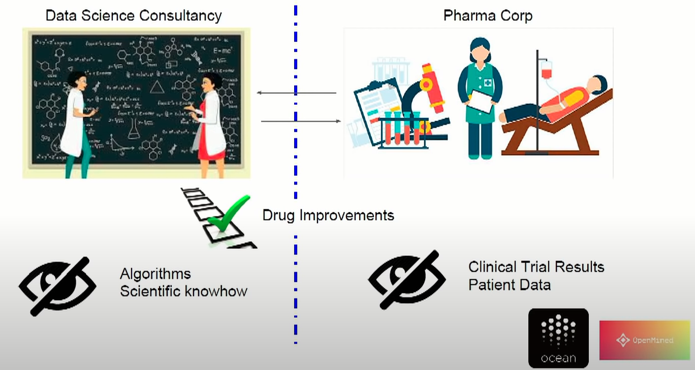 <aside class="notes"> Let's start with some kind of flavor.Suppose I'm a brilliant a data scientist and I want to work with brilliant pharmaceutical corporation that is doing tests on ground breaking medication but they don't have a really strong data science team. I am a super strong data scientist but I don't really have the access to the patients medicine data. We can have only if we trusted each other then everything is good. if we sign NDA that's really nice, but that has all kinds of problems with compliance. What we really want is to keep information private. I want to keep private and the corporation wants to keep the patient data private but we want to gain all the benefit as if we were divulging all our information. That's the kind of tasks we're going to talk about today. </aside>
### Voting <img src="./voting.png" width="400"> <aside class="notes"> For example Tinder. I am speaking to Alice. We want to know whether we both swipe right, but I don't want Alice to know what I swiped in particular and Alice also wants to keep her swipe private for me. Right now we use the tinder servers. Tinder is the trusted intermediary that does the computation of the end function of whether we are both interested? But we want to really decentralize it and the question is how to get that functionality without trusting a central party? Voting is the same thing We want to compute who won the election but all the votes need to be kept private </aside>
### Sending money 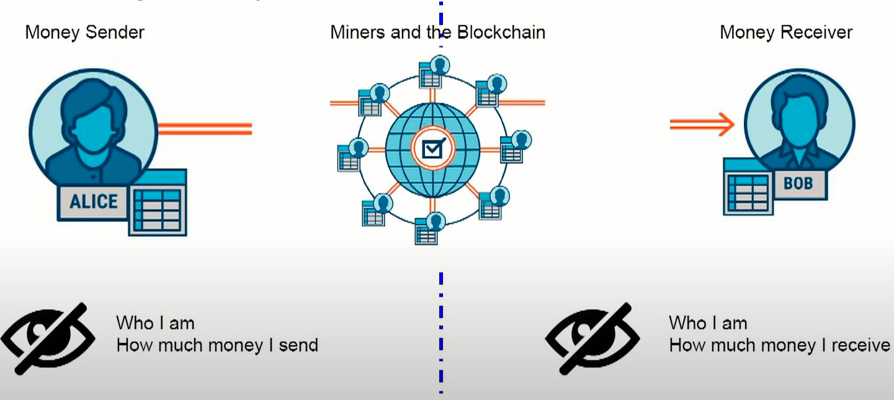 <aside class="notes"> An application you may know very well - sending money. Right now if I use Bitcoin my public key is posted online as well as the amount of money I transferred right. But if we use a bank to do a transfer the bank doesn't divulge anything when I transfer money to someone I don't want anyone on the internet to know anything about that I passed some money around. So testing intermediaries give us privacy right. Now assuming we toss them but the Bitcoin network doesn't quite. There is a solution for this. You may well know solution called Z cashing. Z cash people can transfer money to other people without anyone knowing that anything interesting has happened beyond that someone transferred some amount of money to someone else. So Z cash does solve this. But what happens with web applications </aside>
### Topics * Cryptographically provable privacy * Private computation <aside class="notes"> so What we're going to talk about today is privacy technology we're going to talk about provable privacy cryptographically (privacy that you know it's a queue it's not just heuristic it's cryptographically provable) private computation (not private communication) </aside>
### Agenda * Privacy on blockchain * Implementation of private computation * Real applications based on privacy * Private computation for DApps <aside class="notes"> So the agenda will be why you should care about privacy on the blockchain in particular about private computation you're going to see a little bit about how cryptographers implement private computations and what the primitives look like and how you should think about this. we're going to talk about some really great futuristic applications I'm going to take it down and tell you as web3 developers what you should be thinking about if you want you to make your applications private. </aside>
### Privacy on blockchain 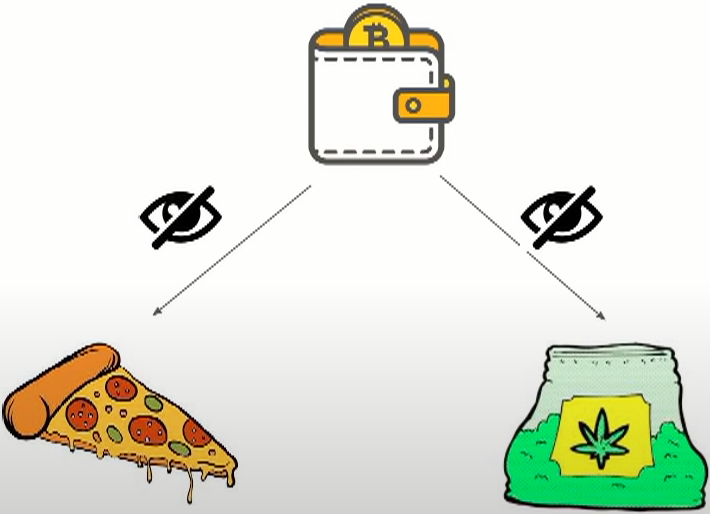 <aside class="notes"> Blockchain privacy is inherently broken. If you use a wallet to pay for a pizza and then you use a wallet with same public key to pay for a bag of weed then the cops can come and ask the pizza salesman where did they deliver too and come arrest you right. That's the way that Bitcoin works, if you use the same public key twice you may say well I never use the same public key twice. Using mixer, you have to use it twice once to get the money and wants to give out money to send out money but suppose you only use it twice you're super safe using mixing networks. The companies that do chain analysis for example to prevent detect and investigate crypto-currency money laundering, fraud and compliance violations is clearly the biggest problem in the world. So all your Bitcoin transfers are not actually secure if some motivated enough analyzer wants to find out who you are. They will do so. The real problem is privacy has been promised. If you ask people who know about Bitcoin what bitcoin is they'll tell you it's a private way to send money secretly.Solutions are using Zcash, Monello , corda etc </aside>
### Privacy for web3 application 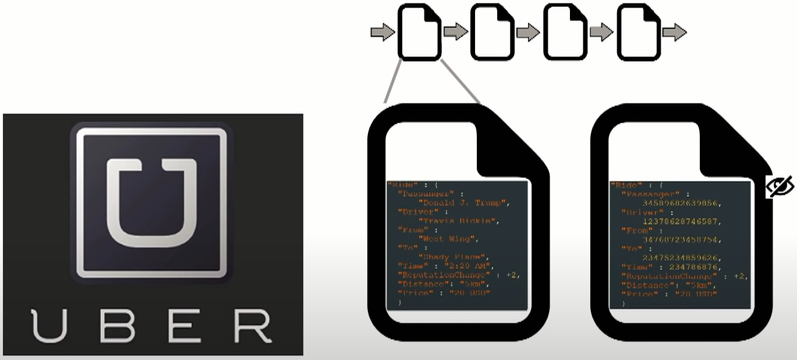 <aside class="notes"> But what about your web3 applications? Example Uber Well I'm going to argue that private computation and not private communication is really important for web3 applications. Suppose you as a dapp developer really want to decentralize uber then how will you do that? uber is a really complicated business logic. You need to preserve reputation You need to calculate how much someone pays for the drive and so on so because of that you need to all of the way you'd naturally implement Uber. On the blockchain is to post all of the private information on other chain or in the blocks and and you need to do that clearly because you have to compute stuff from it. For example the reputation change is the business logic and therefore things need to be posted in clearly. That means that if I'm trying to spy on your users, I'm going to manage to spy them very well. I'm going to see Donald Trump took ride at 2 a.m. I'm going to see that because you need to compute reputation changes and money and stuff like that with private communication you can't hide this data and still get the business logic but with private computation you can. With private computation in the blockchain the block will look like the one on the right saying everything is garbled except the actually actionable changes like reputation change. People say that Millennials don't care about privacy and the privacy is dead. But that's not actually true. Millennials don't care about privacy as much as the older generation does but they still care they wouldn't post their DNA online or browsing history on the Facebook account </aside>
### Fostering Collaboration 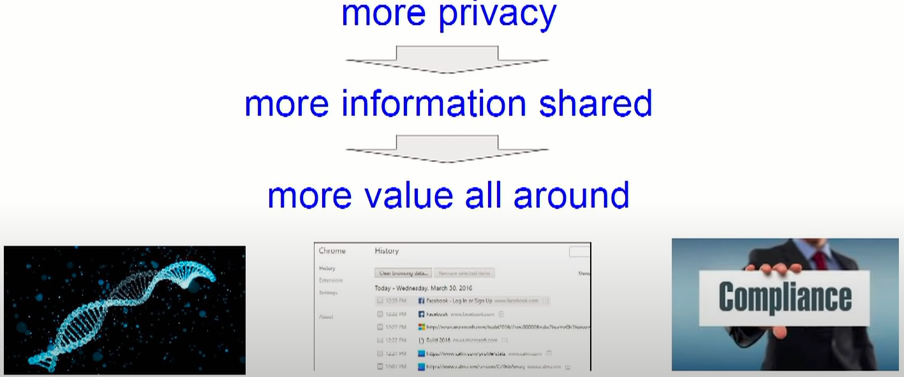 <aside class="notes"> The interesting thing is that if we really find a way to secure the privacy of users in-depth we're going to get people to share much more information both end users and also corporations and businesses. Alike now stock by compliance GDPR and stuff like that from sharing a lot of data and the insight is that the more data you get people to share the more positive some value is created right so privacy and privacy tech is really good for all of us because it's fosters collaboration that's why I don't like to think of it as privacy tech but rather collaboration tech in a perfect world where everything is computed privately. We would have lots and lots of positive collaborations and that's good for everyone even f or those who don't care about particular issues of privacy </aside>
### Private Computation * Zero Knowledge Proofs * Secure Multiparty Computation * zk-Snarks * Homomorphic Encryption * Secure Function Evaluation * Trusted Execution Environments <aside class="notes"> Ok so before going to talk about how cryptographers implement this technology I want to kind of straighten out the buzzwords that we'll all see So the private computation that we'll talk about today is stuff like zero knowledge proof and secure multi-party computation Those are the basic primitives we'll talk about. There's a whole different area of cryptography called private communication that's the stuff with kind of more familiar with like public key cryptography and proxy encryption and the way to think. These are completely different types of technology were from all science one of them is private communication which was started in the 70s by people on the right who is Rivest Shamir and Adleman The other one private computation was started in the 90s by people like Shafi. It's very important to remember that these are very different types of science and we're also not going to talk about other privacy technology like IP spoofing, the financial privacy and so on. We're going to concentrate on the leftmost side. Now let me tell you a little bit about how cryptographers achieve privacy on the blockchain or private computation in general. First of all I need to define what I mean when I talk about privacy - private computation. What does this actually entail? So here's a definition of the strongest primitive for private computation and it's kind of the simplest to explain as well it's called secure multi-party computation. This originates in the 80s with the work of Viau on "the millionaires problem". So this was introduced let's say 82 and they started about 20 years of research and still ongoing. So the primitive is defined as follows You have n players that want to compute a joint function of the inputs so each of the player of the have a private input X that really want to keep private. </aside>
### Secure Multiparty Computation (SMPC) 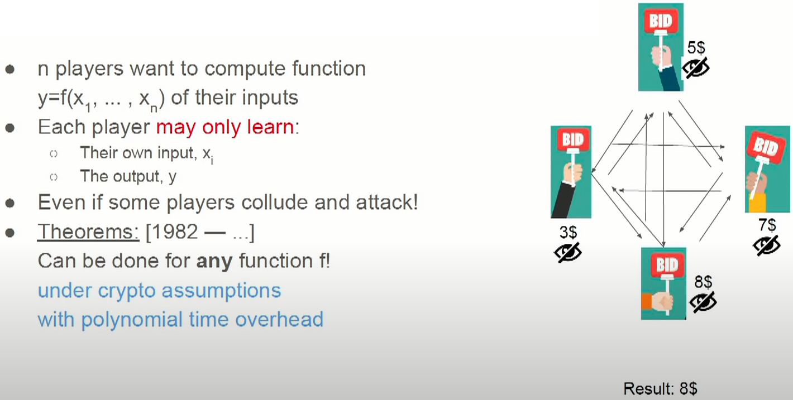 <aside class="notes"> The player number n wants to keep the input X private but they all want to collaborate on computing a joint function f of the inputs and they want to all get the output Y Now each player may only learn this is the cryptographic definition and in the next slide we'll talk about how to actually think about it and define it. Each player may only learn what the input is that they started with and what the output is They may not learn anything about any of the inputs of the other players even if some of the players are malicious and are really trying to collaborate and cheat and spy on the other players no one is allowed to learn anything else Now the amazing feeling that was proved around the 80s and early 90s is that no matter those various versions of this theorem but the general gist is that no matter what your function f is computing no matter what your business logic is This is doable using a protocol and it only needs to assume some cryptographic assumptions and have a polynomial time overhead which is reasonable and that polynomial is improving with the years so this is getting more and more efficient. So amazingly it's the strongest thing you could imagine no matter what you try to compute we can compute it while keeping the privacy of the players. So that's thought I think enables and will enable a lot of value unlock. So in particular if your function that you're computing is an auction so each of the player has the bid and you're trying to compute the maximum function which is who bid the highest then you have a poll to call. Well all the players communicate and no matter if the time to cheat or not you're going to compute the maximum of these bits and the only thing the players will learn is the own bid and the maximum of the other bids. So how cryptographers view it? </aside>
### Simulation proofs 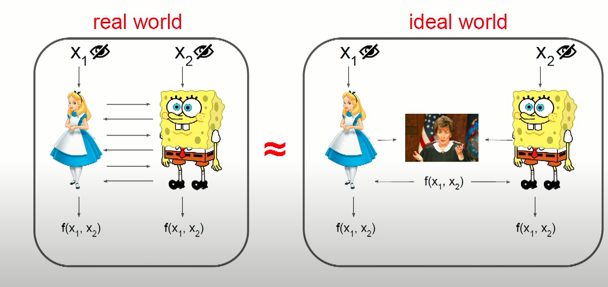 <aside class="notes"> Suppose you're a cryptographer and you have a suggested protocol for secure multi-party computation and it's a great protocol you think it's super safe how do you prove it safe? Well you look at the real world in which you operate on the Left well Ellison Bob I'm just assuming two players for simplicity. It works for any number of players. You have Alice and Bob that communicate with each other. Bob might be replaced by some demon that is trying to mess with the protocol and cheat on Alice and learn what X1 is then you imagine for a second you would be in their ideal world. In the ideal world there's another player Judge Judy who is completely trusted and keeps everyone privacy and you imagine the simplest protocol imaginable. Well Alice sends he'll input to Judy and Bob sends his input to judy. judy computes the output and sends it back to the players. If you look at the at the protocol on the right it satisfies all the properties you wanted. It computes the function and the only thing Alice can learn is X1 and the result no matter how much is trying to spy on Bob. So the only thing we need to prove is that the protocol that the one on their left works the same as the protocol on the light and the way that computer scientists do this is by reduction. What they do is that they assume that there's some adversary that breaks the protocol on the left and they prove that by construction. They can change it to an adversary. It breaks the security or the privacy on the right because the right protocol is secure almost by definition then the left one. </aside>
### Waldo finder <aside class="notes"> zero knowledge is the primitive where I try to prove something to you without telling you anything about how I am I'm trying to prove a claim to you without telling you anything beyond that the claim is true Suppose your business really benefits from finding Waldo in pictures so this picture has a little Waldo somewhere in it and you really want to find it but you don't have a good algorithm for this I come to yours consulting you say that you have the world's best finding algorithm I say I don't want to trust whether you can you find Waldo in this picture. You ask me that you don't want to do free work for you as this is your livelihood so you see we have a conflict in collaboration. We both want to collaborate but we don't trust each other. Well zero knowledge to the rescue. You'll claim that you have a protocol for proving to me that you can find Waldo in this picture without showing how you did it or where Waldo is. </aside>
### Waldo prover <aside class="notes"> Here's how we do it. So you ask me to turn around you put the big picture on the floor as I turn around and then you take a huge cardboard cutout and you put the cardboard cutout such as only Waldo is shown in the picture. It's so huge you don't know where the picture even started so I can't find where you put the cardboard cutout on the picture so look, you ask me to turn around and you really find Waldo then you ask me to turn back I take the cardboard cutout away and that's it So you prove to me that you can find Waldo but I have not learned anything about how you do it and I have not learned anything about where Waldo is in the picture this comes from a kid cryptography - a collection of really simple protocols. So my point here is to show you how I can prove something to you without teaching you anything beyond the correctness of the claim. Of course it is a much more complicated thing but it relies on the same thing arguments about knowledge. </aside>
### ZKP * Cryptographic protocol * ZKP is probabilistic rather than deterministic * Participants : prover and Verifier * Goal : Prover has secret X, prove to verifier without revealing information about X
### ZKP Conditions * Completeness * If the statement is true, then the honest verifier — the one that is following the protocol properly — will be convinced of this fact by an honest prover. * Soundness * If the statement is false, then no cheating prover can convince the honest verifier that it is true, except for some small probability. * Zero knowledge * If the statement is true, then no verifier learns anything, except fact that the statements is true.
### ZKP structure * witness * challenge * response
### ZKP structure : witness 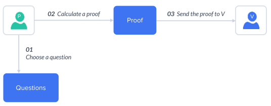
### ZKP structure : challenge 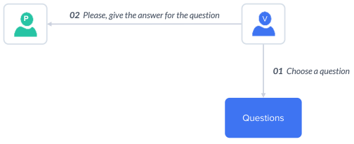
### ZKP structure : response 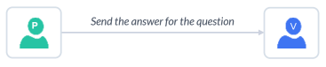
### ZKP structure : response
### Ali baba cave example * Peggy acts as a prover * Victor acts as a verifier 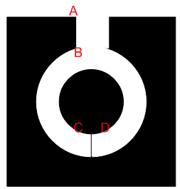 <aside class="notes"> A classic example of a protocol with zero-knowledge proof protocol is a proof of knowledge of the password to the door inside a circular cave. Let P knows the password and wants to prove his knowledge of V without disclosing the password itself. Using the following protocol: Here's how the zero-knowledge proof in this case: V is at point A. P goes all the way through the cave to the door or down the aisle C, or D. the aisle V does not see which way to go P. Once P disappears in a cave, V moves to point B. V asks P, or exit the cave from the left aisle, or the right of passage. P, if necessary, using the secret to unlock the door, out of the cave from the passage from which asked him to leave V. P V and repeating steps 1-5 for a number of times . In the case when P does not know the secret, then it can not deceive V, if the steps of the proof (accreditation) are repeated several times in a row. Since it can only come from the passage in which he went, in every round protocol probability to guess which side of the V will ask him to leave, is 50%. Accordingly, the probability is also deceive V is 50 %. However, the probability to cheat him in two rounds will be over 25 %, and in n rounds, he has only one chance of 2n. V can safely assume that if all n (n = 10-20) rounds proof P are correct, he really knows the secret words that open the door between points C and D. If V writes everything that happens on video, this video is not evidence for a third party. P and V could agree in advance where V will ask him to leave. Then it will be time to get out of each of the V space, n ot knowing the magic words. On the other hand, V can spoof video, leaving only successful attempts P, cut out the rest. It should be noted that the analogy of the cave is not quite correct. Since the proof of knowledge of words P may just go with one hand, while V see which way he went, and out the other. However, it perfectly describes the protocol zero-knowledge proof from a mathematical point of view </aside>
### ZKP types * Interactive * Series of action by verifier to prove * Limited transferability (repetition of process) * Non-Interactive * ZK Snarks * zCASH * Used in blockhains
### non-interactive ZKP 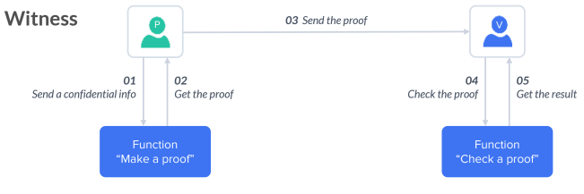
### zk-SNARK * *zk succinct noninteractive argument of knowledge* * **Succinct** - The size of the proof is small enough to be verified in a few milliseconds. * **Noninteractive** - Only one set of information is sent to the verifier for verification, therefore there is no back and forth communication between the prover and verifier. * **Argument of knowledge** - A computationally sound proof: soundness holds against a prover that leverages polynomial-time, i.e. bounded computation.
### Accuracy * ZKP are not 100% accurate * it is minimizing the probability that someone is lying to you.
### Private transactions 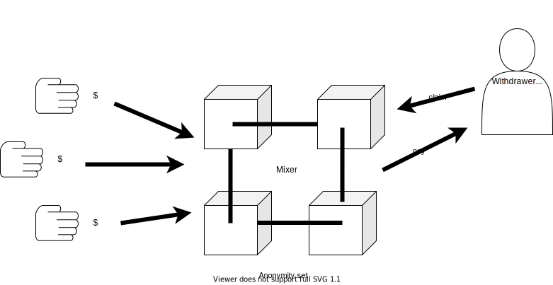
### Applications * Sugar Beet Auctions (Denmark, '08') * Spectrum Auctions * Bitcoin + Privacy (Z CASH) * Decentralized Ad Auctions(AdEX) * Algorithmic re distribution of wealth(future) * Crypto-Governance(future) * Nuclear disarmament <aside class="notes"> the question is what do we do with it so what was done with it until now so the first application was in ojos Denmark in the university that has importantly a really good game theory group and also a really good crypto group so they came together and wrote a system as a pc-based system for auctions of sugar bits Spectrum auctions - so when militaries release cellular frequencies, cellular operators want to buy this but they don't want to tell each other how much these cellular frequencies are worth so you design an auction where the highest bidder wins but the bit of each cellular operator is kept private so it's a mix of game theory and cryptography. In order to create positive sound business value for the cellular operators and for the state that gets the money from the auction and by now we have zCASH models. ad auctions - AdEX claims to do this so this is coming to feel pretty quickly the premise is the following so right now auctions are run by Google and Facebook you know you're an eyeball right you have some demographic information your gender your age and so on. Google auctions you to the highest bidder and they don't reveal much to the advertiser beyond your demographic information but we are testing Google and Facebook. We kind of have to and and they know a lot about us we want to run this with secure multi-party computation decentralize the whole ad market and then your ads will be served in a decentralized way keeping your entire privacy keeping the privacy of who you are and what your demographic information is but still showing you the highest bidding ad and doing the payment to the publisher and so SPC auctions are already a big thing. Interestingly these auctions will be really interesting because with private it comes more data sharing so you can all of a sudden incentivize people to share not only the the demographic information but also the browsing history, the bank records and medical records the DNA so I can advertise to you based on your DNA. So so we're going to see decentralized auctions that we want the user for sharing the data so they get a kickback and advertisers very very efficiently based on all of your private information algorithmic redistribution of wealth - The nation-state can't go away very very soon because the nation-state has power that is really useful for maintaining welfare systems that allow you to opt out of them , the nation-state isn't going away too soon the poll with the nation-state is not so much it's coercive power which is bad but it's that it uses it in such a dumb way so if you think of taxation succession law is dumb it's legacy code. It's designed for accountants to compute for you to be able to check at home and for legislators to test so corporate tax is damn all of these fixes and systems are like rule-based systems they don't make sense what should this work like well we have really good algorithmics for running factories for controlling complicated feedback system so it's the same algorithm or the same kind of things in algorithms that are used to control factories efficiently can be used also to control countries to optimize for stuff like social welfare for GDP growth and so on you will need to mix in some game theory like in auctions or mechanism design to make the players all of us toothed. we need to mix in some economics to figure out what's best for people and so on but you can design these algorithms and note that they don't have to be optimal they all have to be perfect they have to be better than the legacy systems. Now to redistribute wealth the problem is that unlike machines where you can attach a sensor and send all of the data to the blockchain, humans care about the privacy and these algorithms should really care about my medical records, DNA and so on so we need to make these systems preserve our privacy and still get all the business values so zero knowledge and secure multi-party computation will be really necessary for these upcoming systems that. We have a big governance problem by the fact that all of our governance methods are based on legacy systems so our governance is based on voting every four/five/six years on very simplistic rules of voting and so on and I think we'll see crypto governance based on SMPC. That makes governance much more efficient Allowing nations to verify warheads without physical seeing </aside>
### Downsides * Preserving privacy * SMPC is too slow (TEE is solution) * Trusting algorithm <aside class="notes"> if you're designing for example in uber how do you do this? Well what you do is you design a system in the light on in the system on the. There is a Judge Judy and then you apply it an SMPC compiler of sorts to transfer it to the left and this is not a trivial test because you need to define your function f very carefully so what smpc proof promises you if you define your function f to actually concur with how you think about the privacy of your users this will carry to a decentralized setting and the challenge is defining f and making sure that privacy is kept over time even when you employ when you apply as many times next people come and ask me is SMPC too slow and the answer is for most of these applications it is but it won't be become faster using a and moves low it's really hard to tell the users listen there's this magic moon mass that preserves your privacy no matter what so in the same way that it would be really hard to convince someone to get on a big chunk of steel and tell them they'll move through continents the reason users do this is because they've seen others do it and they've done it themselves and nothing bad happened Similarly we put our credit card on the internet something that would be completely crazy because we see this little green lock and we say oh this won't be divulged just like planes don't crash very often so with regulation and normalization that will come adoption it's only a matter of time so asking more about this. </aside>
### Exercise * Follow <a href="https://github.com/GeorgeBrownCollege-Toronto/Advanced-Smart-Contracts/blob/master/notes/zero-knowledge-proof/lab/README.md" target="_blank">this</a> demo, create a smart contract with a proof * Once the proof is sent do something * It can be as simple as flipping a boolean
References
Zero knowledge in web3 summit 2018
Knowledge Complexity Of Interactive Proof-systems
Hopper
by argentlabs
## End